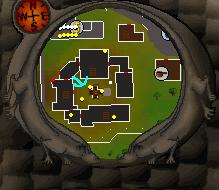
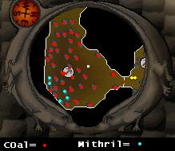

Mining Guild
Requirements: 60 MiningLocation: Near the cannon engineer, South of Falador's East bank. 2nd entrance through the dwarven mines

Once you have reached lvl 60 mining (or 59 with dwarven stout), give yourself a pat on the back and say congratulations to yourself. You may now enter the mining guild!
Head East to the mining area where you will find the rocks. You have stumbled into one of the best mining places available! This area contains 5 mithril and 37 coal rocks. There are 42 rocks in total! Here is a map of what the mining guild looks like.

As you can see, there are many rocks, which are now very close together.
Also watch out for the random events, swarms can hurt you and are indestructable, also a rock golem can appear and attack you whilst mining, so be careful folks.
This Guild guide was written by Darkwiz. Thanks to Fudge, watsermetjou, Electroshock, and cobalta for corrections.
This Guild guide was entered into the database on Mon, Mar 15, 2004, at 08:22:29 PM by Fudge and was last updated on Sat, Mar 04, 2006, at 09:00:25 AM by Oblivion590.